audplot¶
cepstrum¶
- audplot.cepstrum(cc_matrix, hop_duration, *, channel=0, ax=None, cmap='magma')[source]¶
Cepstrum.
- Parameters
- Return type
- Returns
Image object
Example
>>> import librosa >>> import matplotlib.pyplot as plt >>> x, sr = librosa.load(librosa.ex('trumpet')) >>> y = librosa.feature.mfcc(x, sr) >>> hop_dur = 512 / sr # default hop length is 512 >>> image = cepstrum(y, hop_dur) >>> cb = plt.colorbar(image) >>> cb.outline.set_visible(False) >>> plt.tight_layout()
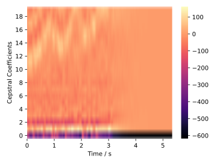
confusion_matrix¶
- audplot.confusion_matrix(truth, prediction, *, labels=None, label_aliases=None, percentage=False, show_both=False, ax=None)[source]¶
Confusion matrix between ground truth and prediction.
The confusion matrix is calculated by
audmetric.confusion_matrix.- Parameters
labels (
Optional[Sequence]) – labels to be included in confusion matrixlabel_aliases (
Optional[Dict]) – mapping to alias names for labels to be presented in the plotpercentage (
bool) – ifTruepresent the confusion matrix with percentage values instead of absolute numbersshow_both (
bool) – ifTrueand percentage isTrueit shows absolute numbers in brackets below percentage values. IfTrueand percentage isFalseit shows the percentage in brackets below absolute numbersax (
Optional[Axes]) – pre-existing axes for the plot. Otherwise, callsmatplotlib.pyplot.gca()internally
Example
>>> truth = [0, 1, 1, 1, 2, 2, 2] * 1000 >>> prediction = [0, 1, 2, 2, 0, 0, 2] * 1000 >>> confusion_matrix(truth, prediction)
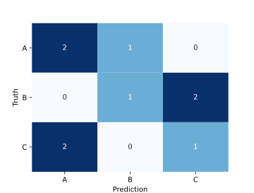>>> confusion_matrix(truth, prediction, percentage=True)
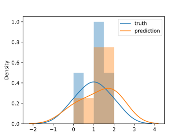>>> confusion_matrix(truth, prediction, show_both=True)
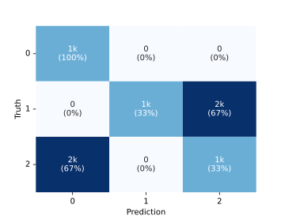>>> confusion_matrix(truth, prediction, percentage=True, show_both=True)
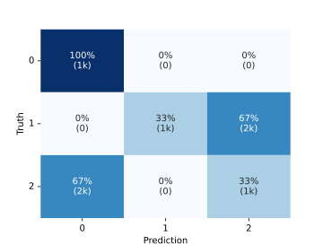>>> confusion_matrix(truth, prediction, labels=[0, 1, 2, 3])
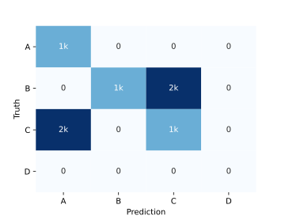>>> confusion_matrix(truth, prediction, label_aliases={0: 'A', 1: 'B', 2: 'C'})
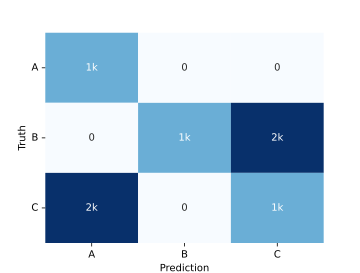
detection_error_tradeoff¶
- audplot.detection_error_tradeoff(x, y, *, error_rates=False, xlim=[0.001, 0.5], ylim=[0.001, 0.5], label=None, ax=None)[source]¶
Detection error tradeoff curve.
A detection error tradeoff (DET) curve is a graphical plot of error rates for binary classification systems, plotting the false non-match rate (FNMR) against the false match rate (FMR).
You can provide truth and prediction values as input or you can directly provide FMR and FNMR, which can be calculated using
audmetric.detection_error_tradeoff().The axes of the plot are scaled non-linearly by their standard normal deviates. This means you have to scale every value by this transformation when you would like to change ticks positions or axis limits afterwards. The scaling is performed by
scipy.special.ndtri()ifscipyis installed, otherwiseaudmath.inverse_normal_distribution()is used, which is slower for large input arrays.- Parameters
x (
Union[Sequence,Series]) – truth values or false match rate (FMR)y (
Union[Sequence,Series]) – predicted values or false non-match rate (FNMR)error_rates (
bool) – ifFalseit expects truth values asx, and prediction values asy. IfTrueit expects FMR asx, and FNMR asyxlim (
Sequence) – x-axis limits with \(x \in ]0, 1[\)ylim (
Sequence) – y-axis limits with \(y \in ]0, 1[\)label (
Optional[str]) – label to be shown in the legend. The legend will not be shown automaticallyax (
Optional[Axes]) – pre-existing axes for the plot. Otherwise, callsmatplotlib.pyplot.gca()internally
- Return type
- Returns
function to transform input values to standard normal derivate scale
Example
>>> truth = np.array([1] * 1000 + [0] * 1000) >>> # Random prediction >>> pred1 = np.random.random_sample(2000) >>> # Better than random prediction >>> pred2 = np.zeros(2000,) >>> pred2[:1000] = np.random.normal(loc=0.6, scale=0.1, size=1000) >>> pred2[1000:] = np.random.normal(loc=0.4, scale=0.1, size=1000) >>> pred2 = np.clip(pred2, 0, 1) >>> transform = detection_error_tradeoff( ... truth, ... pred1, ... xlim=[0.01, 0.99], # use large limits for random ... ylim=[0.01, 0.99], ... label='pred1', ... ) >>> # Add pred2 to plot using transformed FMR and FNMR values >>> import audmetric >>> fmr, fnmr, _ = audmetric.detection_error_tradeoff(truth, pred2) >>> _ = plt.plot(transform(fmr), transform(fnmr), label='pred2') >>> _ = plt.legend() >>> plt.tight_layout()
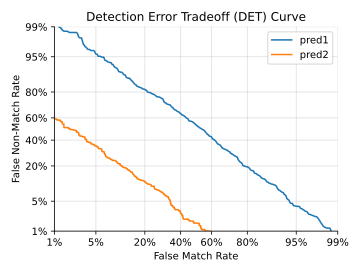
distribution¶
- audplot.distribution(truth, prediction, *, ax=None)[source]¶
Distribution of truth and predicted values.
- Parameters
Example
>>> np.random.seed(0) >>> truth = np.random.normal(loc=0.0, scale=1.0, size=1000) >>> prediction = np.random.normal(loc=0.05, scale=0.5, size=1000) >>> distribution(truth, prediction)
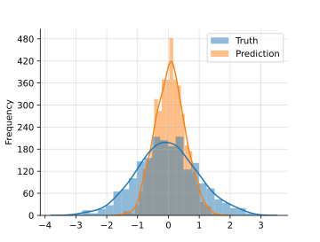
human_format¶
- audplot.human_format(number)[source]¶
Display large or small numbers in a human readable way.
It replaces large or small numbers by no more than 3 significant digits and no more than 1 fractional digit. Instead it adds a string indicating the base, e.g. 12345 becomes 12.3k.
The naming is according to:
n
\(10^{-9}\)
nano
u
\(10^{-6}\)
micro
m
\(10^{-3}\)
milli
k
\(10^{3}\)
thousand
M
\(10^{6}\)
Million
Mega
B
\(10^{9}\)
Billion
Giga
T
\(10^{12}\)
Trillion
Tera
P
\(10^{15}\)
Quadrillion
Peta
E
\(10^{18}\)
Quintillion
Exa
Z
\(10^{21}\)
Sextillion
Zetta
Y
\(10^{24}\)
Septillion
Yotta
- Parameters
- Return type
- Returns
formatted number string
- Raises
ValueError – if
number\(\ge 1000^9\) ornumber\(\le 1000^{-4}\)
Example
>>> human_format(12345) '12.3k' >>> human_format(1234567) '1.2M' >>> human_format(123456789000) '123B' >>> human_format(0.000123) '123u' >>> human_format(0) '0' >>> human_format(-1000) '-1k'
scatter¶
series¶
signal¶
- audplot.signal(x, sampling_rate, *, channel=0, ax=None)[source]¶
Time signal.
- Parameters
x (
ndarray) – array with signal valuessampling_rate (
float) – sampling rate in Hzchannel (
int) – channel indexax (
Optional[Axes]) – pre-existing axes for the plot. Otherwise, callsmatplotlib.pyplot.gca()internally
Example
>>> import librosa >>> x, sr = librosa.load(librosa.ex('trumpet')) >>> signal(x, sr)
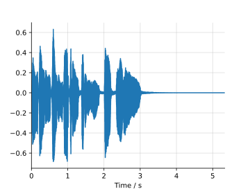
spectrum¶
- audplot.spectrum(magnitude, hop_duration, centers, *, channel=0, cmap='magma', ax=None)[source]¶
Plot spectrum.
- Parameters
magnitude (
ndarray) – matrix with magnitude valueshop_duration (
float) – hop duration in secondscenters (
ndarray) – array with center frequencieschannel (
int) – channel indexcmap (
str) – color mapax (
Optional[Axes]) – pre-existing axes for the plot. Otherwise, callsmatplotlib.pyplot.gca()internally
- Return type
- Returns
Image object
Example
>>> import librosa >>> import matplotlib.pyplot as plt >>> x, sr = librosa.load(librosa.ex('trumpet')) >>> y = librosa.feature.melspectrogram(x, sr, n_mels=40, fmax=4000) >>> y_db = librosa.power_to_db(y, ref=np.max) >>> hop_dur = 512 / sr # default hop length is 512 >>> centers = librosa.mel_frequencies(n_mels=40, fmax=4000) >>> image = spectrum(y_db, hop_dur, centers) >>> cb = plt.colorbar(image, format='%+2.0f dB') >>> cb.outline.set_visible(False) >>> plt.tight_layout()
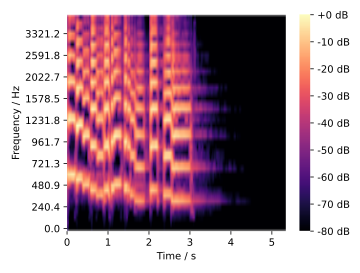
waveform¶
- audplot.waveform(x, *, text=None, color='#E13B41', background='#FFFFFF00', linewidth=1.5, ylim=(- 1, 1), ax=None)[source]¶
Plot waveform of a mono signal.
Shows only the outline of a time signal without showing any axis or values.
- Parameters
x (
ndarray) – array with signal valuestext (
Optional[str]) – optional text to be displayed on the left side of the waveformcolor (
Union[str,Sequence[float]]) – color of wave form and textbackground (
Union[str,Sequence[float]]) – color of backgroundlinewidth (
float) – line width of signalax (
Optional[Axes]) – pre-existing axes for the plot. Otherwise, callsmatplotlib.pyplot.gca()internally
- Raises
RuntimeError – if signal has more than one channel
Example
>>> import librosa >>> x, _ = librosa.load(librosa.ex('trumpet')) >>> waveform(x, text='Trumpet')
>>> import librosa >>> x, _ = librosa.load(librosa.ex('trumpet')) >>> waveform(x, background='#363636', color='#f6f6f6')
>>> import librosa >>> import matplotlib.pyplot as plt >>> x, _ = librosa.load(librosa.ex('trumpet', hq=True), mono=False) >>> _, axs = plt.subplots(2, figsize=(8, 3)) >>> plt.subplots_adjust(hspace=0) >>> waveform( ... x[0, :], ... text='Left ', # empty space for same size as 'Right' ... linewidth=0.5, ... background='#389DCD', ... color='#1B5975', ... ax=axs[0], ... ) >>> waveform( ... x[1, :], ... text='Right', ... linewidth=0.5, ... background='#CA5144', ... color='#742A23', ... ax=axs[1], ... )
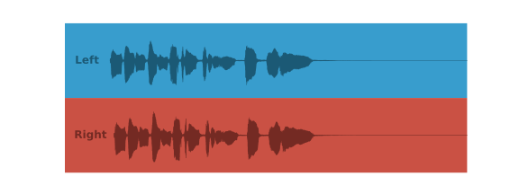